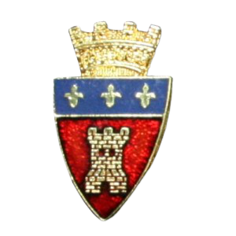

Le Conseil-Inter-Régionales
Témoignage de Eric Toussaint
Nous sommes en avril 1986 juste après les élections des comités des régionales. Voilà trois ans et demi que la RTM existe, deux et demi pour la Carlo, les autres suivent, la Brabo vient d’être créé… Je termine ma troisième année.
Depuis déjà tout un temps se ressent le besoin de nous coordonner. Nous avions déjà dû le faire temporairement pour le baptême et l’organisation de la Saint Nicolas mais l’absence de structure et de statut s’est fait cruellement ressentir pendant les dépucelages.
Comme la volonté de construire ensemble du début était toujours bien présente, c’était le moment. Je réunissait au 11B kot les présidents souhaitant participer aux premières réflexions : Steve Vanden Eiden (pas sûr) pour la Brabo, Fred Dawance pour la Liégeoise, Renaud Meurisse pour la Namuroise, Philippe DeTandt pour la RTM et moi même pour la Carolo.
Nous avions bien pensé à appeler cela la Fédération des régionales Namuroise, mais Renaud trouvait la connotation trop proche et la Fédé de LLN nous avais déjà tapé sur les doigts pour avoir usurpé ce diminutif lors de la Saint Nicolas. Et puis ce que nous voulions, c’est créer un espace pour décider ensemble, comme nous l’avions toujours fait.
Donc, pas de comité élu : en était d’office membre les présidents des régionales ou leurs représentants. Le nom est donc venu naturellement : le Conseil Inter Régional et j’ai eu l’honneur d’en être le premier président.
Les autres régionales ont adhéré la rentrée suivante. La création d’un folklore avait réussi 4 ans auparavant, nous commencions à écrire le reste de l’histoire.
• un Président
• un ou deux Vice-Président(s)
• un Secrétaire
• un Trésorier
• un ou deux Délégué(s) Folklore (mâle)
• une Déléguée Fille (femelle)
Le Conseil du CIR est composé :
• du comité CIR
• de tous les présidents de Régionales
Les couleurs du CIR sont le noir et le rouge. (...) Il est seul responsable de l’organisation et du bon déroulement des baptêmes de régionales. (...)
Tout membre du comité CIR sera dans l’obligation de porter la toge de fonction (noire liserée de rouge).
Seul le président sera autorisé à porter un band noir et rouge (15 cm de large avec mention de la charge en doré).
Statuts du CIR XXXIVème, 2020-2021 )


L’Ordre du Triste CIR
L’Ordre du Triste CIR a été créé en l’an de grâce 1990 par Olivier Devigne. La dénomination « Triste » rappelle la passation de pouvoir de la présidence du CIR, et par conséquent, de l’Ordre du Triste CIR, qui est souvent un moment d’émotions intenses, de nostalgie.
Le Triste CIR a pour but de récompenser tout baptisé qui, de par ses actes, s’est nettement distingué des autres dans la perpétuation ou la promotion du folklore calotin de Namur. (...)
Cette médaille ne se portant que sur toge, en ordre, il est décrété par le comité CIR XXXIV, qu’une décoration sera instaurée pour la calotte. Cette décoration se matérialise par une bande rouge et noire de 1,5cm de large. Cette bande sera surmontée en son centre par un petit blason du CIR. Cette bande se placera sur la gauche de tout autre vlek de régionale.
Statuts du CIR XXXIVème, 2020-2021
L’ouverture et la fermeture des régionales
C’est un événement traditionnel organisé par le CIR et les 10 régionales du site Namurois lançant ou fermant le quadri de guindaille. Généralement, cela se déroule au Bunker, chaque régionale occupe un stand et propose diverses boissons “locales”.
C’est ouvert à tous et donc c’est également l’occasion de rencontrer les gens de sa régionale et autres, de poser pleins de questions à propos du baptême étudiant et de s’y inscrire.
L’arsenal sous le feu des régionales
Cet événement se déroule pendant toute une journée. Tout au long de cette journée, les 10 régionales du campus namurois ainsi que l’Ordre Souverain de la Calotte (OSC) et la confrérie des dignitaires de l’ordre de Saint Aubain (CDOSA) tiennent un stand pour faire découvrir leurs produits régionaux et leur folklore.
Des groupes folkloriques (Marcheurs, échassiers, etc) sont également de la partie, toutes les heures, un groupe musical se produit. Cet événement n’avait plus eu lieu depuis 6 ans lors de l’éditions de 2017.
L’entrée dans l’Arsenal est libre et gratuite.


|  |  |
 |
 |
 |
 |
 |